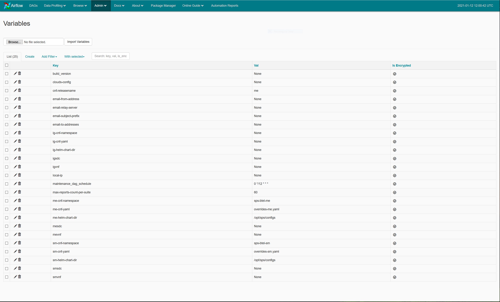

By default, DAGs are not enabled in an Airflow/Maestro setup, that is, you cannot execute test suites from the Airflow UI on a freshly installed Maestro. Only a maintenance DAG is present on the Airflow landing page.
The following figure presents an example of the Airflow landing page with no test DAGs.
To be able to view default Airflow DAGs for SPS-CNF in Airflow UI, you need to provide certain variables in Airflow.
- Access Airflow UI through a web browser using the Maestro IP or
http://<IP.OF.MAESTRO>/admin, or contact the NCC DevOps team. - Navigate to .
Variables view is displayed, for example:
Figure: Airflow variables view  - Provide the following variables required for viewing the default Airflow DAGs in
Airflow UI.
Table: Mandatory variables to view Test Suite DAGs for SPS-CNF Variable Description (ig/me/sm)-cnf-namespaceKubernetes namespace used for the NCC setup. (ig/me/sm)-helm-chart-dirDirectory of Helm charts located in Maestro, containing the configuration YAML file(s). Once the variables are configured, DAGs are generated for the default test suites provided by the application team. For custom DAGs, the user can use Package Manager. Note:
Note:
Example values for SPS-CNF ME and SM tests:
me-cnf-namespace: sps-btel-mesm-cnf-namespace: sps-btel-smme-helm-chart-dir: /opt/sps/configssm-helm-chart-dir: /opt/sps/configsme-cnf-yaml: overrides-me.yamlsm-cnf-yaml: overrides-sm.yamlcnf-releasename: me
For templates for the overrides-me.yaml and
overrides-sm.yaml files, see Templates for (me/sm)-cnf-yaml files.
There are also optional common Airflow variables for configuring different NCC setups depending on user requirements. For more information, see Common Airflow variables.